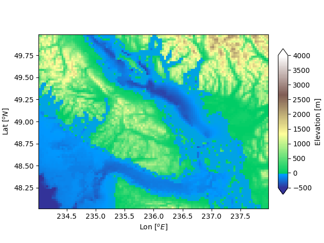

Version 3.1.1
Note
Click here to download the full example code
Sometimes we want to have a different colormap on either side of a conceptual center point, and we want those two colormaps to have different linear scales. An example is a topographic map where the land and ocean have a center at zero, but land typically has a greater elevation range than the water has depth range, and they are often represented by a different colormap.
import numpy as np
import matplotlib.pyplot as plt
import matplotlib.cbook as cbook
import matplotlib.colors as colors
filename = cbook.get_sample_data('topobathy.npz', asfileobj=False)
with np.load(filename) as dem:
topo = dem['topo']
longitude = dem['longitude']
latitude = dem['latitude']
fig, ax = plt.subplots(constrained_layout=True)
# make a colormap that has land and ocean clearly delineated and of the
# same length (256 + 256)
colors_undersea = plt.cm.terrain(np.linspace(0, 0.17, 256))
colors_land = plt.cm.terrain(np.linspace(0.25, 1, 256))
all_colors = np.vstack((colors_undersea, colors_land))
terrain_map = colors.LinearSegmentedColormap.from_list('terrain_map',
all_colors)
# make the norm: Note the center is offset so that the land has more
# dynamic range:
divnorm = colors.DivergingNorm(vmin=-500, vcenter=0, vmax=4000)
pcm = ax.pcolormesh(longitude, latitude, topo, rasterized=True, norm=divnorm,
cmap=terrain_map,)
ax.set_xlabel('Lon $[^o E]$')
ax.set_ylabel('Lat $[^o N]$')
ax.set_aspect(1 / np.cos(np.deg2rad(49)))
fig.colorbar(pcm, shrink=0.6, extend='both', label='Elevation [m]')
plt.show()
Keywords: matplotlib code example, codex, python plot, pyplot Gallery generated by Sphinx-Gallery